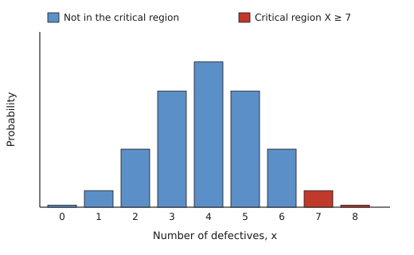

<script>if(location.hostname.endsWith('onrender.com'))location.replace('https://math-sandbox.github.io'+location.pathname+location.search+location.hash)</script>
<section class="theory" data-section="S2-1.3">
<h2>1.3 Type I and Type II errors</h2>
<p class="src">Based on Cambridge International AS &amp; A Level Mathematics: Probability &amp; Statistics 2 Coursebook (Jayne Kranat), Chapter 1 Hypothesis testing, printed pp.17–22 (the error table, Worked example 1.7, Exercise 1C, checklist). Own wording and new numbers. Type I and Type II errors for tests of a population mean, and other distributions, are used in later chapters; the definitions themselves are the same.</p>
<p class="key-words"><strong>Key words:</strong> <em>Type I error</em>, <em>Type II error</em>, <em>significance level</em>, <em>critical region</em></p>
<p>A hypothesis test can lead to an incorrect decision in two ways. A <strong>Type I error</strong> occurs when a true null hypothesis is rejected. A <strong>Type II error</strong> occurs when a false null hypothesis is accepted.</p>
<p>Type I errors and Type II errors are the two incorrect decisions that a hypothesis test can produce.</p>
<p>These two errors can be set out as a table.</p>
<table class="plain">
<thead>
<tr><th></th><th>Accept \(H_0\)</th><th>Reject \(H_0\)</th></tr>
</thead>
<tbody>
<tr><th>\(H_0\) is true</th><td>Correct decision</td><td>Type I error</td></tr>
<tr><th>\(H_0\) is false</th><td>Type II error</td><td>Correct decision</td></tr>
</tbody>
</table>
<p>The probability of a Type I error is the probability of landing in the critical region when \(H_0\) is true. For a test with a stated significance level, that probability is at most the significance level; for a discrete distribution it is the actual tail probability of the critical region, which may be smaller than the nominal level. The probability of a Type II error can be found only when a particular value under \(H_1\) is given, because “\(H_0\) is false” does not by itself name a distribution.</p>
<p>Raising the significance level makes a Type I error more likely and a Type II error less likely, because the critical region becomes larger.</p>
<p></p>
<div class="worked-example">
<h4>Worked example 1: A binomial Type I error, and when a Type II error is possible</h4>
<p class="src">Book: Worked example 1.7, p.19; new distribution and numbers</p>
<p>A machine is supposed to produce packets with a defect rate of \(0.5\). A quality inspector takes a random sample of \(8\) packets and carries out a one-tailed test at the \(5\%\) significance level of \(H_0\colon p=0.5\) against \(H_1\colon p\gt 0.5\), where \(p\) is the probability that a packet is defective. Let \(X\) be the number of defective packets in the sample, so that under \(H_0\), \(X\sim\mathrm{B}(8,\,0.5)\).</p>
<ol class="steps">
<li>The upper-tail probabilities under \(H_0\) are \(\mathrm{P}(X\geqslant 7)=8\bigl(\dfrac{1}{2}\bigr)^8+\bigl(\dfrac{1}{2}\bigr)^8=\dfrac{9}{256}=0.0352\) to 3 significant figures, and \(\mathrm{P}(X\geqslant 6)=0.145\) to 3 significant figures. The critical region at the \(5\%\) level is therefore \(X\geqslant 7\). <span class="mark">M1 A1</span></li>
<li>A Type I error occurs if \(H_0\) is rejected when it is true, that is if there are \(7\) or \(8\) defectives when \(p=0.5\). The probability of a Type I error is \(0.0352\). In this context, that means concluding that the defect rate is greater than \(0.5\) when in fact it is \(0.5\). <span class="mark">A1</span></li>
<li>If \(6\) defectives are observed, then \(H_0\) is accepted, because \(6\) is not in the critical region. A Type II error is possible in that case: the null hypothesis may be false, and accepting it would then be a Type II error. The probability of a Type II error cannot be calculated unless a particular value of \(p\) under \(H_1\) is given. <span class="mark">B1</span></li>
</ol>
<p class="final"><strong>Answer:</strong> The probability of a Type I error is \(0.0352\) to 3 significant figures. If \(6\) defectives are observed, \(H_0\) is accepted and a Type II error is possible.</p>
</div>
<h3>Common mistakes</h3>
<ul>
<li>Reversing the two errors: rejecting a true \(H_0\) is Type I; accepting a false \(H_0\) is Type II.</li>
<li>Taking the probability of a Type I error to be the nominal significance level even when the actual tail of a discrete critical region is smaller.</li>
<li>Trying to calculate the probability of a Type II error without a specific value for the parameter under \(H_1\).</li>
</ul>
<h3>Quick checks</h3>
<div class="quick-check">
<h4>Quick check 1</h4>
<p>A test is carried out at the \(10\%\) significance level. What is the largest possible percentage chance of a Type I error?</p>
<details><summary>Worked solution</summary>
<p>The probability of a Type I error is at most the significance level, so the largest possible percentage is \(10\).</p>
</details>
</div>
<div class="quick-check">
<h4>Quick check 2</h4>
<p>Under \(H_0\), \(X\sim\mathrm{B}(8,\,0.5)\). A one-tailed test rejects \(H_0\) when \(X\geqslant 7\). Find the probability of a Type I error, correct to 3 significant figures.</p>
<details><summary>Worked solution</summary>
<p>\(\mathrm{P}(X\geqslant 7)=\dfrac{9}{256}=0.0352\) to 3 significant figures.</p>
</details>
</div>
<div class="quick-check">
<h4>Quick check 3</h4>
<p>In the test of Quick check 2, it is now given that \(p=0.8\). Find the probability of a Type II error, correct to 3 significant figures.</p>
<details><summary>Worked solution</summary>
<p>\(H_0\) is accepted when \(X\leqslant 6\). Under \(p=0.8\), \(\mathrm{P}(X\leqslant 6)=1-\mathrm{P}(X\geqslant 7)=1-\bigl(8(0.8)^7(0.2)+(0.8)^8\bigr)=0.497\) to 3 significant figures.</p>
</details>
</div>
<p class="marks-key">B marks are for a correct statement; M marks are for a correct method; A marks are for an accurate result.</p>
</section>
